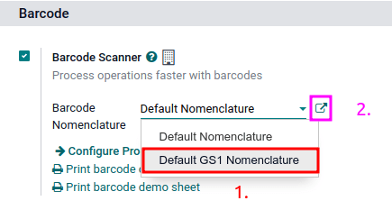

GS1 barcode nomenclature¶
GS1 nomenclature consolidates various product and supply chain data into a single barcode. Odoo takes in unique Global Trade Item Numbers (GTIN), purchased by businesses, to enable global shipping, sales, and eCommerce product listing.
Configure GS1 nomenclature to scan barcodes of sealed boxes and identify essential product information, such as GTIN, lot number, quantity information, and more.
Important
GTINs are unique product identification that must be purchased from GS1 to use GS1 barcodes.
Set up barcode nomenclature¶
To use GS1 nomenclature, navigate to the . Then under the Barcode section, check the Barcode Scanner box. Next, select from the default barcode nomenclature options.
The list of GS1 rules and barcode patterns Odoo supports by default is accessible by clicking the ➡️ (arrow) icon to the right of the Barcode Nomenclature selection.
In the Open: Nomenclature pop-up table, view and edit the GS1 Rule Names available in Odoo. The table contains all the information that can be condensed with a GS1 barcode, along with the corresponding Barcode Pattern.
Tip
After setting GS1 as the barcode nomenclature, the settings can also be accessed by a hidden menu that’s discoverable after enabling developer mode. Once enabled, navigate to the menu and finally, select Default GS1 Nomenclature.
Use GS1 barcodes in Odoo¶
For product identification using GS1 barcodes in Odoo, businesses obtain a unique GTIN as an internationally distinct product identifier purchased from GS1. This GTIN is combined with specific product details following GS1’s designated barcode pattern. The barcode pattern’s arrangement of numbers and letters must adhere to GS1 conventions for accurate interpretation by global systems along the supply chain.
Every barcode starts with a 2-4 digit application identifier (A.I.). This required prefix universally indicates what kind of information the barcode contains. Odoo follows GS1 rules for identifying information, as detailed in the default GS1 rules list. Including the relevant A.I. from the list enables Odoo to correctly interpret GS1 barcodes. While most barcode patterns have a fixed length requirement, certain ones, such as lots and serial numbers, have flexible length.
Tip
For flexible-length barcode patterns not placed at the end of the GS1 barcode, use the FNC1
separator (\x1D) to end the barcode.
Example: The barcode pattern for lot numbers is 20 characters long. Instead of creating a
20-character lot number barcode, like LOT00000000000000001, use the FNC1 separator to make it
shorter: LOT001x1D.
Refer to the GS1 nomenclature list to see a comprehensive list of all barcode patterns and rules to follow. Otherwise, refer to this GS1 usage doc for specific examples of combining GTIN to product information and configuring the workflow.
Create rules¶
GS1 rules are a specific format of information contained in the barcode, beginning with an A.I. and containing a defined length of characters. Scanning GS1 barcodes from the default GS1 list auto-fills corresponding data in the Odoo database.
Adding GS1 barcode rules in Odoo ensures accurate interpretation of unique, non-standard GS1 formats.
To do so, begin by turning on developer mode and navigating to the Barcode Nomenclatures list in . Then, select the Default GS1 Nomenclature list item.
On the Default GS1 Nomenclature page, select Add a line at the bottom of the table, which opens a window to create a new rule. The Rule Name field is used internally to identify what the barcode represents. The barcode Types are different classifications of information that can be understood by the system (e.g. product, quantity, best before date, package, coupon). The Sequence represents the priority of the rule; this means the smaller the value, the higher the rule appears on the table. Odoo follows the sequential order of this table and will use the first rule it matches based on the sequence. The Barcode Pattern is how the sequence of letters or numbers is recognized by the system to contain information about the product.
After filling in the information, click the Save & New button to make another rule or click Save & Close to save and return to the table of rules.
Barcode troubleshooting¶
Since GS1 barcodes are challenging to work with, here are some checks to try when the barcodes are not working as expected:
Ensure that the Barcode Nomenclature setting is set as . Jump to the nomenclature setup section for more details.
Ensure that the fields scanned in the barcode are enabled in Odoo. For example, to scan a barcode containing lots and serial numbers, make sure the Lots & Serial Numbers feature is enabled in Odoo’s settings and on the product.
Omit punctuation such as parentheses
()or brackets[]between the A.I. and the barcode sequence. These are typically used in examples for ease of reading and should not be included in the final barcode. For more details on building GS1 barcodes, go to this section.When a single barcode contains multiple encoded fields, Odoo requires all rules to be listed in the barcode nomenclature for Odoo to read the barcode. This section details how to add new rules in the barcode nomenclature.
Test barcodes containing multiple encoded fields, piece by piece, to figure out which field is causing the issue.
Example
When testing a barcode containing the GTIN, lot number, and quantity, start by scanning the GTIN alone. Then, test the GTIN with the lot number, and finally, try scanning the whole barcode.
After diagnosing the encoded field is unknown, add new rules to Odoo’s default list to recognize GS1 barcodes with unique specifications.
Important
While the new field will be read, the information won’t link to an existing field in Odoo without developer customizations. However, adding new rules is necessary to ensure the rest of the fields in the barcode are interpreted correctly.
GS1 nomenclature list¶
The table below contains Odoo’s default list of GS1 rules. Barcode patterns are written in regular expressions. Only the first three rules require a check digit as the final character.
Rule Name |
Type |
Barcode Pattern |
GS1 Content Type |
Odoo field |
|---|---|---|---|---|
Serial Shipping Container Code |
Package |
(00)(\d{18}) |
Numeric identifier |
Package name |
Global Trade Item Number (GTIN) |
Unit Product |
(01)(\d{14}) |
Numeric identifier |
Barcode field on product form |
GTIN of contained trade items |
Unit Product |
(02)(\d{14}) |
Numeric identifier |
Packaging |
Ship to / Deliver to global location |
Destination location |
(410)(\d{13}) |
Numeric identifier |
Destination location |
Ship / Deliver for forward |
Destination location |
(413)(\d{13}) |
Numeric identifier |
Source location |
I.D. of a physical location |
Location |
(414)(\d{13}) |
Numeric identifier |
Location |
Batch or lot number |
Lot |
(10) ([!”%-/0-9:-?A-Z_a-z]{0,20}) |
Alpha-numeric name |
Lot |
Serial number |
Lot |
(21) ([!”%-/0-9:-?A-Z_a-z]{0,20}) |
Alpha-numeric name |
Serial number |
Packaging date (YYMMDD) |
Packaging Date |
(13)(\d{6}) |
Date |
Pack date |
Best before date (YYMMDD) |
Best before Date |
(15)(\d{6}) |
Date |
Best before date |
Expiration date (YYMMDD) |
Expiration Date |
(17)(\d{6}) |
Date |
Expiry date |
Variable count of items |
Quantity |
(30)(\d{0,8}) |
Measure |
UoM: Units |
Count of trade items |
Quantity |
(37)(\d{0,8}) |
Measure |
Qty in units for containers (AI 02) |
Net weight: kilograms (kg) |
Quantity |
(310[0-5])(\d{6}) |
Measure |
Qty in kg |
Length in meters (m) |
Quantity |
(311[0-5])(\d{6}) |
Measure |
Qty in m |
Net volume: liters (L) |
Quantity |
(315[0-5])(\d{6}) |
Measure |
Qty in L |
Net volume: cubic meters (m3) |
Quantity |
(316[0-5])(\d{6}) |
Measure |
Qty in m3 |
Length in inches (in) |
Quantity |
(321[0-5])(\d{6}) |
Measure |
Qty in inches |
Net weight/volume: ounces (oz) |
Quantity |
(357[0-5])(\d{6}) |
Measure |
Qty in oz |
Net volume: cubic feet (ft3) |
Quantity |
(365[0-5])(\d{6}) |
Measure |
Qty in ft3 |
Packaging type |
Packaging Type |
(91) ([!”%-/0-9:-?A-Z_a-z]{0,90}) |
Alpha-numeric name |
Package type |